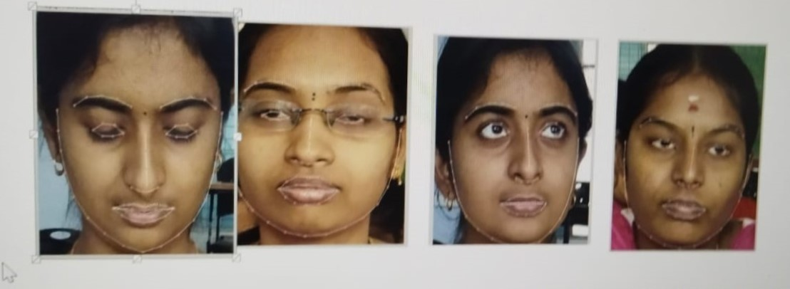

Figure 1: Driver fatigue monitoring system (sample image)
🛏 Drowsiness Detection
- Eye closure rate & blink duration monitoring
- Head nodding and yawning detection
- Face landmark analysis for driver fatigue signs
- Real-time alert system to prevent accidents
🚗 Car Damage Assessment
- Capture damaged vehicle images post-incident
- Detect damage area and severity
- Classify into front/rear/side impact
- Useful for insurance claim support

Figure 2: Post-accident damage detection and classification (sample image)
💡 Technology Stack
- Dlib & OpenCV for facial detection
- YOLOv5 for car damage detection
- Custom dataset training with TensorFlow
- Web dashboard for monitoring and reporting
✅ Benefits
- Prevents accidents caused by drowsiness
- Automates car damage reporting
- Improves fleet safety and insurance processing